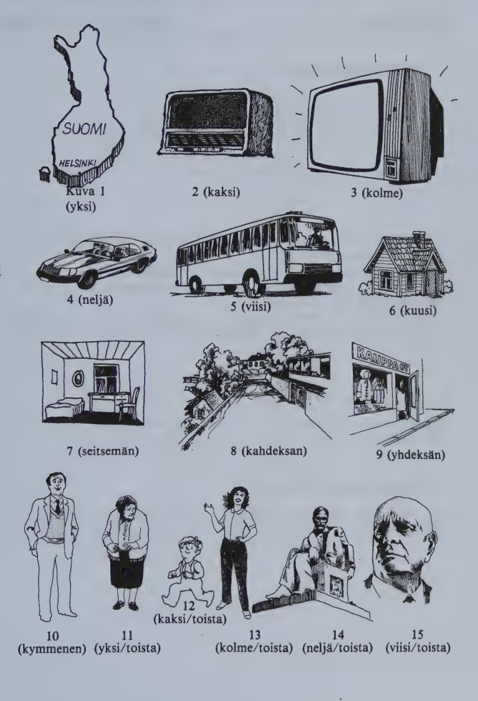
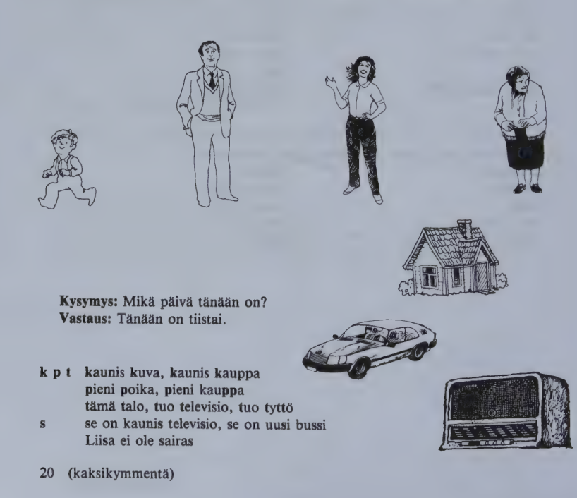

Kappale 1 / Lesson 1#
Mikä tämä on? / What is this?#
Suomi |
English |
|---|---|
1. Se on Suomi. |
1. It is Finland. |
2. Se on radio. |
2. It is a radio. |
3. Se on televisio. |
3. It is a television. |
4. Se on auto. |
4. It is a car. |
5. Se on bussi. |
5. It is a bus. |
6. Se on talo. |
6. It is a house. |
7. Se on huone. |
7. It is a room. |
Mikä tuo on? / What is that?#
Suomi |
English |
|---|---|
8. Se on katu. |
8. It is a street. |
9. Se on kauppa. |
9. It is a shop. |
10. Se on mies. |
10. It is a man. |
11. Se on nainen. |
11. It is a woman. |
12. Se on poika. |
12. It is a boy. |
13. Se on tyttö. |
13. It is a girl. |
Kuka tämä on? / Who is this?#
Suomi |
English |
|---|---|
14. Se on Aleksis Kivi. |
14. It is Aleksis Kivi. |
Kuka tuo on? / Who is that?#
Suomi |
English |
|---|---|
15. Se on Jean Sibelius. |
15. It is Jean Sibelius. |
Mikä tämä on? Radio, kuva, mies.
Kuka tämä on? Aleksis Kivi, Liisa Salo, Ville.
Mikä päivä tänään on?
Tänään on maanantai.
Kuva#

Kielioppia / Structural notes#
1. Finnish alphabet#
A (B) (C) D E (F) G H I J K L M N O P (Q)
aa bee see dee ee äf gee hoo ii jii koo äl äm än oo pee kuu
R S T U V (W) (X) Y (Z) Å Ö
är äs tee uu vee kaksois-vee äks yy tset ää öö
The alternative terms älld, ämmä, ännä, ärrä, ässä, äksä, tseta are also used as names for the respective letters.
The letters in parentheses do not occur in purely Finnish words.
w (“double v”) occurs in a few names and is pronounced like v; in lists arranged alphabetically it is treated as a v.
å (the Swedish o) - between z and ä in the alphabet - occurs in a number of family and place names, e.g. Ålander (family name), Åbo Turku, Borgå Porvoo.
2. No article in Finnish#
There is no article in Finnish. talo, for instance, means both “a house” and “the house”.
3. Basic form of nouns#
talo, mies, tyttö, and all the other nouns in this lesson appear in the non-inflected or basic form (dictionary form) of the noun (nominative singular).
Sanasto / Vocabulary#
Finnish |
English |
|---|---|
auto |
car, automobile |
bussi |
bus |
huone |
room |
kappale |
piece, bit; paragraph; lesson, chapter |
katu |
street |
kauppa |
shop, store |
kuka? |
who? |
kuva |
picture |
mies |
man; husband |
mikä? |
what? which? |
nainen |
woman, lady |
on (from olla to be) |
is |
poika |
boy; son |
radio |
radio, wireless |
se |
it |
se (mies) |
(with nouns:) the, that (man) |
Suomi |
Finland |
talo |
house |
televisio |
television |
tuo (colloq. toi) |
that, that one |
tyttö |
girl |
tämä (colloq. tää) |
this, this one |
New words in structural notes, reader, exercises etc.#
Finnish |
English |
|---|---|
maanantai |
Monday |
numero |
number, figure |
päivä |
day |
sivu (abbr. s.) |
page (p.) |
tänään |
today |
Kappale 2 / Lesson 2#
Millainen tämä on? / What is this like?#
Suomi |
English |
|---|---|
1. Millainen poika on? |
1. What is the boy like? |
2. Hän on pieni. |
2. He is small. |
Mies on iso. |
The man is big. |
3. Millainen tyttö on? |
3. What is the girl like? |
4. Hän on nuori ja kaunis. |
4. She is young and pretty. |
Nainen on vanha ja sairas. |
The woman is old and ill. |
5. Millainen talo on? |
5. What is the house like? |
6. Se on vanha. |
6. It is old. |
Auto on uusi. |
The car is new. |
7. Onko se hyvä? |
7. Is it a good one? |
8. On. |
8. Yes, it is. |
9. Onko tämä hyvä radio? |
9. Is this a good radio? |
10. Ei (ole). Se on huono. |
10. No, it is not. It is a bad one. |
Kysymys: Mikä päivä tänään on?
Vastaus: Tänään on tiistai.
k p t kaunis kuva, kaunis kauppa
pieni poika, pieni kauppa
tämä talo, tuo televisio, tuo tyttö
s se on kaunis televisio, se on uusi bussi
Liisa ei ole sairas
Kuva#

Kielioppia / Structural notes#
1. No grammatical gender in Finnish#
There is no grammatical gender (masculine, feminine, or neuter) in Finnish. Even the pronoun hän means both “he” and “she”. hän is used of people only, se is used to refer to animals and inanimate objects.
In careless every-day speech se is commonly used to refer to people as well.
2. How to form questions#
a) Mikä tämä on? What is this?
When a question begins with an interrogative word (e.g. mikä), the word-order is the same as in an ordinary statement, not reversed as in English.
b) On/ko Helsinki kaunis? Is Helsinki beautiful?
When the question begins with a verb, the word-order is reversed, and the interrogative suffix -ko (or -kö, see 4:2) is added to the verb.
It should be noted that Finnish “yes/no” questions do not show the rising intonation typical of English. The pitch of the voice in Finnish sentences normally goes down, even in questions.
Short colloquial forms occur: onk(o) se? etc.
The suffix -ko (-kö) may also be added to words other than verbs:
Finnish |
English |
|---|---|
Minä/kö? |
Me? |
Tämä poika/ko? |
This boy? |
Tänään/kö? |
Today? |
It can also be used to create a special emphasis; cp. these three questions:
Finnish |
English |
|---|---|
On/ko hän sairas? |
Is he ill? |
Hän/kö on sairas? |
Is he ill? He is ill? |
Sairas/ko hän on? |
Is he ill? |
Sanasto / Vocabulary#
Finnish |
English |
|---|---|
ei |
no |
ei ole |
(no,) it is not |
huono |
bad, poor |
hyvä |
good |
hän |
he, she |
iso |
big, large |
ja |
and |
kaunis (!= ruma) |
pretty, beautiful |
-ko (-kö) |
interrogative suffix |
millainen? |
what … like? what kind of? |
nuori |
young |
pieni |
small, little |
sairas (!= terve) |
ill, sick |
uusi |
new |
vanha |
old, ancient |
New words in structural notes, reader, exercises etc.#
Finnish |
English |
|---|---|
kysymys |
question |
tiistai |
Tuesday |
vastaus |
answer, reply |